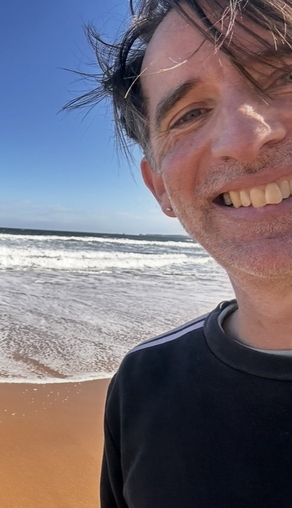

01Evaluation · 2019
Let’s Talk Money
Lead author and project manager for an evaluation of a financial literacy program for refugee and migrant women.
Evaluation report · Women’s Health in the NorthREAD THE REPORT →Helping your organisation understand its benefit - unpacking service design assumptions, making evidence and outcomes explicit, adapting approaches for different contexts, and gaining insights from lived experience.
Much of my work applies to services addressing family violence and child abuse, including engaging people with lived experience.

Some of the reports, evaluations and other projects I have authored, led or contributed to.
Lead author and project manager for an evaluation of a financial literacy program for refugee and migrant women.
Evaluation report · Women’s Health in the NorthREAD THE REPORT →Lead author and project manager for reviews of major Victorian family violence reforms.
Family Violence Reform Implementation MonitorREAD THE REVIEWS →Author of a report on settlement support in an Australian town, written for the United Nations High Commissioner for Refugees (UNHCR).
UNHCRREAD THE PAPER →Lead author of a submission to the Victorian Parliament’s Education and Training Committee.
Centre for Multicultural YouthREAD THE SUBMISSION →Lead author and project manager for a performance audit of Victoria’s approach to contaminated land.
Victorian Auditor-General’s OfficeREAD THE REPORT →Lead author and project manager for a follow-up audit looking at progress on supporting child protection practitioners.
Victorian Auditor-General’s OfficeREAD THE REPORT →Lead author and project manager for a follow-up review of progress in protecting Victoria’s coastal assets.
Victorian Auditor-General’s OfficeREAD THE REPORT →Author of an article on lessons from Australia’s increase in refugee intake.
Asylum InsightREAD THE ARTICLE →Author of an article on Australia’s refugee protection role in the region.
Asylum InsightREAD THE ARTICLE →I have a unique skill set having worked across system reform, policy and operational roles.
My work is informed by adult and child victim survivors of family violence, and people who use family violence. I have worked directly with children, young people and their families in the child protection system and with adult survivors of institutional child sexual abuse.
My work pays close attention to how policy ambitions are achieved and actually felt in practice, including how practitioners translate policy into effective and therapeutic action.
Master of Social Work
25+ years across government, community services, consulting, research, evaluation and audit.
Available for short and longer projects, including independent research, evaluation, community engagement, group facilitation and coaching in policy and program design skills.
My rates: Available on request.
While my fees will be calculated using a day rate, tasks can be delivered across longer time periods. For example, a 10 day project might be delivered in 70 hours across a number of months.
This is particularly useful for community engagement activity and conducting interviews, or designing and implementing surveys.